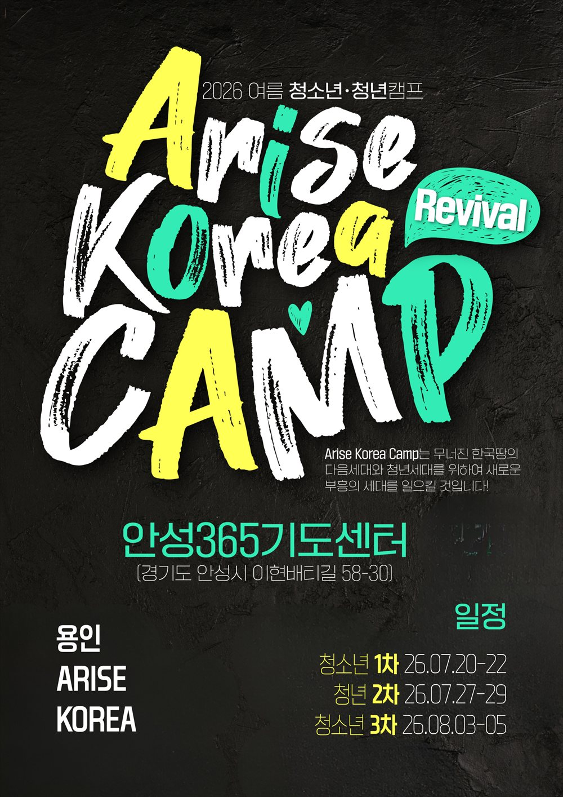
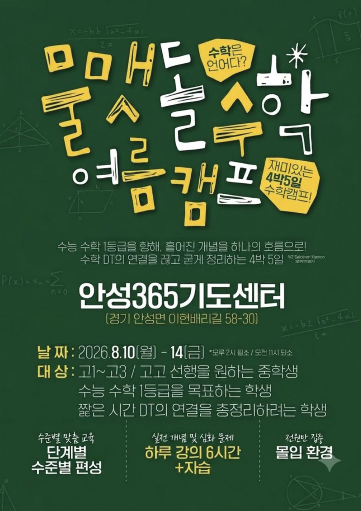

🖼
1~3차 영성캠프 포스터준비 중
2026 여름
1~3차 영성캠프
2026년 여름, 청소년과 청년을 대상으로 세 차례 진행한 2박 3일 영성캠프입니다. 세 차수가 같은 포스터로 안내되었습니다.
홈 › 소개 › AKC 소개
캠프보다 캠프 이후가 더 뜨거운 캠프, AKC를 소개합니다.
AKC(Arise Korea Camp)는 킹덤 프로듀서 · 킹덤 빌더 · 킹덤 어라이저, 이 세 가지 방향성을 가지고 만들어진 캠프입니다.
전국의 지역교회와 공동체가 함께 주도하는 연합 캠프이며, 누구에게나 열려 있습니다. 한 교회의 행사가 아니라 여러 공동체가 함께 준비하고 함께 책임지는 자리이기에, 캠프가 끝난 뒤에도 각자의 교회와 삶의 자리에서 이어질 수 있습니다.
그래서 AKC가 가장 중요하게 생각하는 시간은 3일간의 캠프가 아니라, 캠프 이후의 365일입니다. 뜨거웠던 감동이 삶의 습관과 공동체의 부흥으로 이어지도록 돕는 것이 저희의 목표입니다.
AKC 슬로건 말씀후에 그들에게 이르기를 우리가 당한 곤경은 너희도 보고 있는 바라 예루살렘이 황폐하고 성문이 불탔으니 자, 예루살렘 성을 건축하여 다시 수치를 당하지 말자 하고
— 느헤미야 2:17
AKC의 모든 프로그램은 이 세 방향 위에 설계됩니다.
하나님 나라를 만들어가는 사람. 전공도, 직업도, 재능도 그대로 그 자리가 됩니다.
하나님 나라를 세워가는 사람. 나 자신에서 시작해 가정과 공동체, 그리고 지역으로 이어집니다.
하나님 나라를 일으키는 사람. 혼자 서는 것으로 끝나지 않고, 함께 일어나 다른 사람을 일으킵니다.
AKC를 선택할 일곱 가지 이유입니다.
초청강사의 말씀과 뜨거운 예배. 단순한 집회가 아닌, 마음 깊은 곳까지 닿는 시간입니다.
막연한 꿈이 아닌 구체적인 방향을 함께 찾습니다. 학업 · 진로 · 취업 앞에 선 청소년과 청년에게 결정적인 전환점이 됩니다.
한 단체가 동원하는 캠프가 아닙니다. 전국의 지역교회와 공동체가 함께 기획하고 함께 섬기는 연합 캠프이며, 교회에 다니지 않는 친구도 함께 올 수 있는 열린 자리입니다.
조별 나눔과 팀빌딩 활동. 화면 너머가 아닌, 얼굴을 마주하는 진짜 공동체를 경험합니다.
태안수양관에서 진행합니다. 도심을 떠나 예배와 나눔, 쉼에만 집중할 수 있는 환경입니다.
전담 스태프가 24시간 동행하며, 진행 상황을 실시간으로 공유하고 일정을 투명하게 공개합니다. 긴급 연락망도 함께 운영됩니다.
스마트처치 앱으로 캠프 이후의 일상까지 함께합니다. 학업과 진로에서 취업과 결혼까지, 실제 삶의 여정을 함께 걷습니다.
AKC는 지금까지 네 번의 캠프를 진행했습니다. 영성캠프 세 번과 영역캠프 한 번, 그리고 이번 겨울 5~7차 캠프로 이어집니다.

2026년 여름, 청소년과 청년을 대상으로 세 차례 진행한 2박 3일 영성캠프입니다. 세 차수가 같은 포스터로 안내되었습니다.

2026년 8월, 고등학생을 대상으로 진행한 4박 5일 수학캠프입니다. 영역캠프의 첫 번째 시도였습니다.